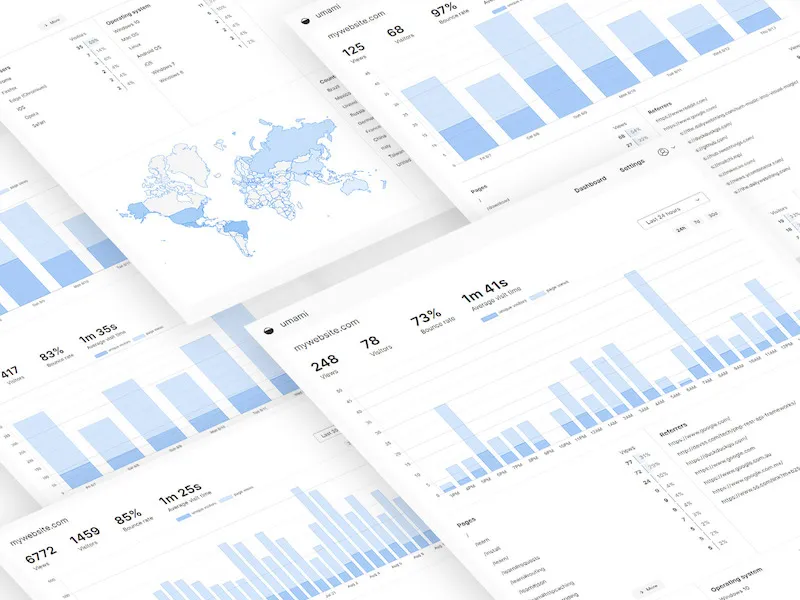
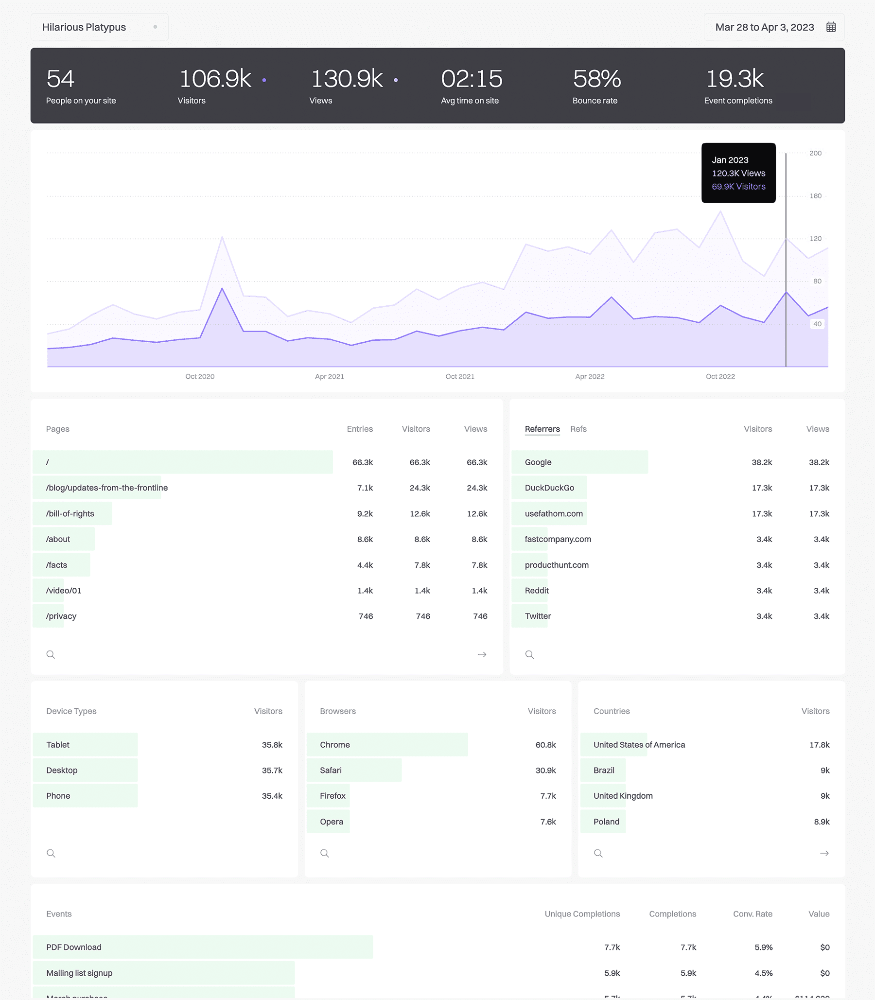

Self-hosted платформы для веб-аналитики
Umami
Являясь одной из лучших альтернатив Google Analytics, Umami предлагает ориентированное на конфиденциальность решение для веб-аналитики с открытым исходным кодом, которое делает упор на этические принципы и не ставит под угрозу конфиденциальность пользователей, следуя рекомендациям Общего регламента по защите данных (GDPR) без использования файлов cookie или персональных данных. Благодаря удобному интерфейсу вы можете наслаждаться аналитикой в реальном времени без лишних хлопот, а активное сообщество разработчиков ПО с открытым исходным кодом обеспечивает его универсальность и неограниченные возможности отслеживания веб-сайтов. Umami гарантирует мобильную доступность и не подвержена влиянию блокировщиков рекламы благодаря небольшому скрипту в 2 КБ. Обмен информацией через уникальные URL-адреса и элегантный темный режим добавляют стильный штрих. С каналами GitHub, Discord и Twitter, способствующими сотрудничеству, аспект сообщества имеет важное значение. Цены Umami Cloud удовлетворяют различные потребности, начиная от бесплатных планов Hobby до опций Pro (начиная с $9/месяц) и настраиваемых корпоративных решений. Используйте аналитику с честностью благодаря надежности Umami, поддерживаемой сообществом.
Fathom Analytics
Fathom Analytics — «альтернатива Google без компромиссов». Платформа популярна по двум причинам: шифрование данных посетителей и соблюдение GDPR, CCPA и PECR, а также простая аналитика для доступа ко всей информации на единой панели мониторинга, поддерживаемая масштабируемой технологией. Fathom защищает конфиденциальность пользователей, в отличие от Google Analytics, избавляясь от навязчивых куки и баннеров куки. Его удобная для пользователя панель управления предлагает актуальную информацию для принятия мудрых решений. Более того, любые опасения по поводу цифровой конфиденциальности эффективно решаются с помощью соответствия GDPR и бизнеса, ориентированного на конфиденциальность. Выдающиеся особенности Fathom — прозрачные бизнес-практики, расширенное хранение данных и безупречная репутация. Он сочетает простоту с глубоким пониманием. Кроме того, цена разумна, начиная с $14 в месяц, а длительный пробный период еще больше добавляет привлекательности. Fathom — лучший вариант для надежной аналитики, которая действительно уважает конфиденциальность.
Plausible Analytics

Если вы устали теряться в сложном мире технологий, таких как Google Analytics, то решение — Plausible Analytics . Это удобное решение обеспечивает критически важные сведения, не требуя высокой кривой обучения. С Plausible интеграция с другими платформами, такими как Squarespace и WordPress , проста и легко синхронизируется. Вы можете оставаться на вершине с отчетами по электронной почте и Slack, а также обширным API, который предлагает универсальность данных. Если вы обеспокоены конфиденциальностью данных, будьте уверены, что Plausible предлагает полное владение, предоставляя надежную статистику через скрипты первой стороны. Вы можете попробовать платформу с 30-дневной бесплатной пробной версией, а цена после пробной версии начинается всего с $9 в месяц. Plausible позволяет вам взять под контроль свои данные и вернуть себе спокойствие благодаря простоте аналитики.
Open Web Analytics
Главные преимущества выбора Open Web Analytics (OWA) — это прямой контроль и настраиваемость, которые он предлагает. Размещение его на вашем домене дает вам непревзойденный авторитет, а настройка расширяет возможности. Не идя на компромиссы в вопросах конфиденциальности, OWA сочетает простоту и функциональность с удобным пользовательским интерфейсом и всеобъемлющим API. Он изменил ландшафт, выступая за ответственную, прозрачную аналитику. OWA нарушает традиции открытого исходного кода, внедряя сложные возможности, такие как мониторинг панели мониторинга, тепловые карты , анализ кликов и отслеживание действий на сайте. Он демонстрирует тонкое понимание поведения пользователя, оптимизируя методы SEO и углубляясь в лояльность посетителей. Способность OWA отслеживать взаимодействие с элементами DOM демонстрирует его комплексный подход. Более того, его собственный контроль, совместимость с многочисленными платформами и системами управления контентом, такими как WordPress и MediaWiki, подробные метрики и соблюдение конфиденциальности повышают удобство его использования, охватывая широкий спектр вариантов
Matomo

С клиентской базой, охватывающей более миллиона веб-сайтов в более чем 190 странах, Matomo является надежной альтернативой Google с открытым исходным кодом. Ему доверяют такие известные организации, как ООН, Ahrefs и даже NASA, защищая конфиденциальность своих клиентов. Европейская комиссия выбрала эту платформу, доказав ее навыки в области целостности данных. Отличительной особенностью этой платформы является Google Analytics Importer, который обеспечивает бесперебойную передачу исторических данных Google Analytics. Matomo может безопасно отслеживать персональные данные, соблюдая стандарты конфиденциальности. Точность отчетов платформы обусловлена отсутствием выборки данных, что обеспечивает потребителей 100% точной информацией. Ее открытый исходный код снижает риски и предоставляет пользователям прозрачную, тщательно протестированную платформу. Кроме того, Matomo не имеет ограничений по данным, что позволяет клиентам управлять неограниченным количеством веб-сайтов, пользователей и сегментов данных. Удобный интерфейс упрощает извлечение данных, а широкий набор функций обеспечивает содержательную информацию о поведении клиентов. Универсальность Matomo позволяет клиентам изменять и расширять платформу для удовлетворения индивидуальных требований.